Business Intelligence
Data Marts
Data Marts
Data Mart Einordnung
- Externe (Teil-)Sicht auf das Data Warehouse
- Subjektorientiert
- Deckt Anforderungen einer speziellen Nutzergruppe ab
- Kann aber auch im Sinne es Golden Records übergreifend im gesamten Unternehmen vorhanden sein (Standardisierung vs. Individualisierung)
- Struktur der Data Marts hängt immer stark von Reporting Anforderungen ab (Unterschied Controlling & Marketing)
- Trennung nach Historisierung und Aktualität
- Unterschiedliche Aggregationsstufen
Gründe für Data Marts
- Eigenständigkeit
- Datenschutz
- Lastverteilung
- Datenvolumen
- Vereinfachung
- Verarbeitung durch OLAP Software
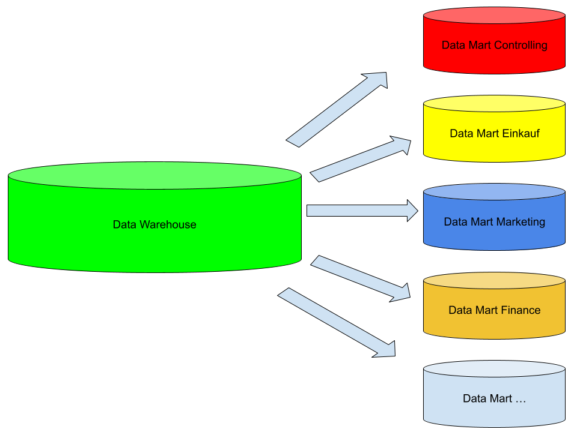
Vorgehen Data Mart
- Anforderungsanalyse (Scope definieren)
- Entitäten, Attribute und Quelltabellen in unterliegenden DWH-Layer identifizieren
- Berechnungslogiken der KPIs festlegen
- Fakten und Dimensionen bestimmen
- Relationale Umsetzung in Star oder Snowflake Schema
- Abschließend Übergabe Dokumentation für Erstellung Cubes in SSAS, PowerCubes oder MDDB oder direkt als Reports auf Basis des relationalen Data Marts
Aggregation und Filter Data Mart
- Beschränkung auf Teile des Schemas nur bestimmte Kennzahlen oder Dimensionen
- Inhaltliche Beschränkung, nur bestimmte Filialen oder das letzte Jahresergebnis
- Verringerung der Granularität nur Artikelgruppen
- Zeitlicher Horizont und Historisierung Beschränkung z.B. auf Monatsergebnisse
Fakten
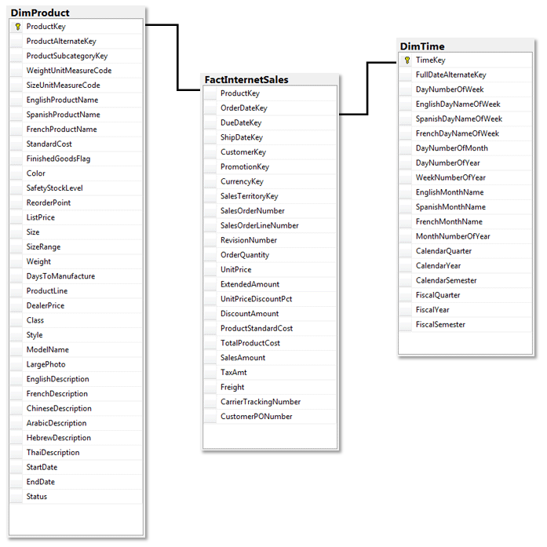
Fakten
- KPIs - Gewinn, Umsatz, Kosten
- Messgrößen meist aggregiert (verschiedene Fakten wenn andere Granularität gewünscht)
- Attribute sind meist arithmetisch ermittelt
- Typen von Fakten
- Transaktion – Niedrige Granularität, eine Zeile pro Transaktion
- Periodischer Snapshot – Eine bestimmter Zeitintervall baut oftmals auf Transaktionsebene auf
- Akkumulierter Snapshot – Pro Zeile wird ein definierter Vorgang abgebildet mit Start und Ende (beinhaltet oftmals placeholder, z.B. Retouren bei einem Einkauf)
- Temporaler Snapshot – Bildet den täglichen Stand ab, in welchen Zeitraum ein Datensatz gültig ist und wann eine Transaktion durchgeführt wurde
Summentypen
- FLOW – Addictive Fact
- zeitraumbezogen (pro Zeiteinheit)
- Beliebig aggregierbar
- Beispiel: Bestellmenge eines Artikels pro Tag
- STOCK Maß über Zeitraum – semi-Addictive Fact
- Beliebig aggregierbar mit Ausnahme temporaler Dimension
- Beispiel: Lagerbestand, Einwohnerzahl
- VALUE – PER – UNIT(VPU) - non-Addictive Fact
- Zeitpunktbezogen (zum Zeitpunkt)
- Aktuelle Zustände, die nicht summierbar sind
- Zulässig nur: MIN(), MAX(), AVG()
- Beispiele: Preis, Wechselkurs, Steuersatz
- Besonderheit - Factless fact
- Beinhaltet nur Schlüssel der Dimensionen – Bridge zwischen Dimensionen
Voraussetzungen eines Fakts
- Uniqueness Wert einer Kennzahl nur einmal im Fakt
- Surrogate Keys nötig bei temporaler Betrachtung
- Werte einer höheren Aggregationsstufe lassen sich von Werten niederer Aggregationsstufe errechnen
- Stadt ➡️ Bundesland ➡️ Land
Dimensionen
Dimensionen
- Zeit, Raum, Objekt
- Unterteilung nach Jahr, Quartal, Monat
- Beschreiben Sicht auf die KPIs
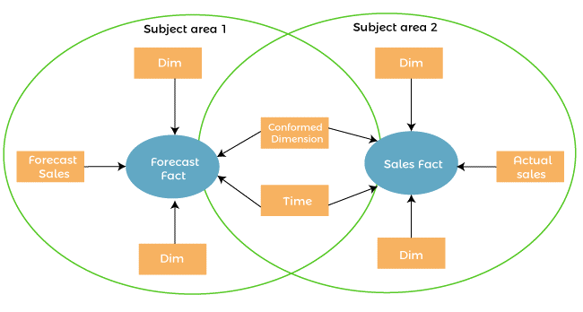
Hierarchie in Dimensionen
Parallele Hierarchie
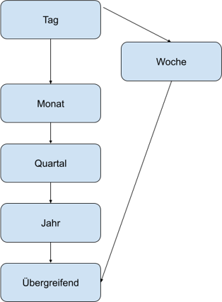
Einfache Hierarchie
Bundesland ➡️ Stadt ➡️ Filiale
Primärschlüssel und Entitätstyp bestimmen Granularität einer Dimension
Typen von Dimensionen
- Conformed Dimension
- Outrigger Dimension
- Shrunken Dimension
- Role-Playing Dimension
- Dimension to Dimension Table
- Junk Dimension
- Degenerate Dimension
- Swappable Dimension
- Step Dimension
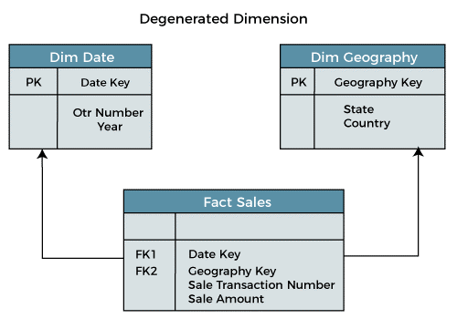
Modellierung im Data Mart
Snowflake
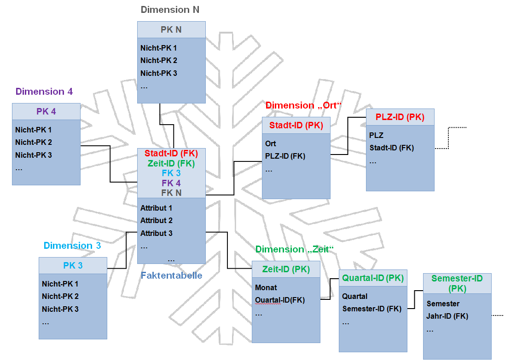
Star
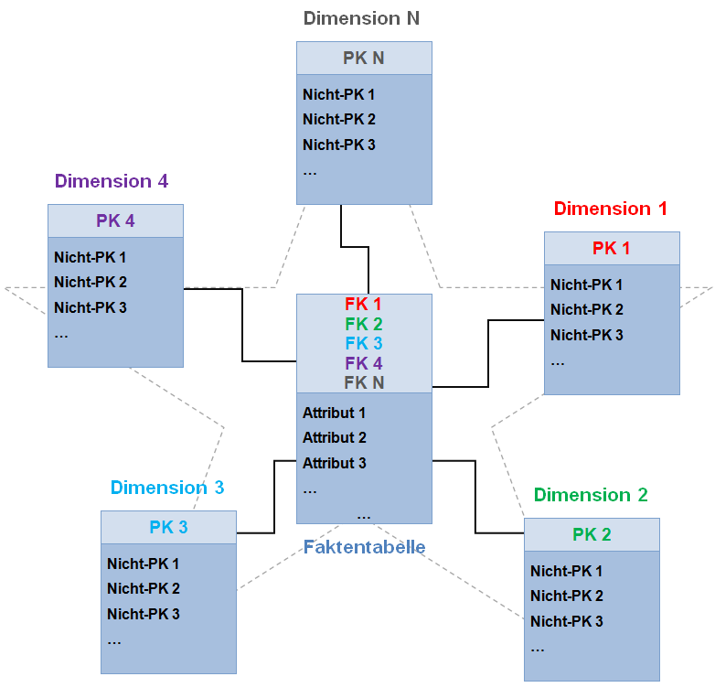
Star vs. Snowflake
Star
- Hierarchien sind in den Dimensionen enthalten
- Einzelne joins
- Simples Design
- Denormalized = bessere Query Performance
- Höhere Redundanzen
- Single Point of truth in Dimensionen
- Cube processing performanter
Snowflake
- Hierarchien sind in separaten Tabellen abgebildet
- Eine Verkettung von joins
- Komplexes Design
- Normalized = schlechtere Query Performance
- Niedrige Redundanzen
- Daten sind gesplittet über die Dimensionen
- Cube processing performanter
Slowly Changing Dimensions (SCD)
- In den Data Marts wird selten nur der Current-Datensatz gefordert
- Definierte Historische Struktur
- Realtime oder min/sek Taktung
- Tagesaktuell
- Wöchentlich
- Monatlich
- Historische Wahrheit
- Rückwirkende Historie und/oder aktuelle Historie aufbauen
SCD Typ 0 - Insert Only
| Kundenummer | Name | Straße | Hausnummer | GültigVon | GültigBis |
|---|---|---|---|---|---|
| 1 | Müller | Am Weg | 3 | 01.02.2023 | 31.12.9999 |
| 2 | Schmidt | Breitestr. | 25 | 01.02.2023 | 31.12.9999 |
| 3 | Behrens | Mittelweg | 5 | 01.02.2023 | 31.12.9999 |
Daten am 01. 03.2023
| Kundenummer | Name | Straße | Hausnummer |
|---|---|---|---|
| 4 | Rudert | Hauptstr. | 1 |
| 3 | Behrens | Sandelstr. | 18 |
Resultat
| Kundenummer | Name | Straße | Hausnummer | GültigVon | GültigBis |
|---|---|---|---|---|---|
| 1 | Müller | Am Weg | 3 | 01.02.2023 | 31.12.9999 |
| 2 | Schmidt | Breitestr. | 25 | 01.02.2023 | 31.12.9999 |
| 3 | Behrens | Mittelweg | 5 | 01.02.2023 | 31.12.9999 |
| 4 | Rudert | Hauptstr. | 1 | 01.03.2023 | 31.12.9999 |
SCD Typ 1 - Update & Insert
| Kundenummer | Name | Straße | Hausnummer | GültigVon | GültigBis |
|---|---|---|---|---|---|
| 1 | Müller | Am Weg | 3 | 01.02.2023 | 31.12.9999 |
| 2 | Schmidt | Breitestr. | 25 | 01.02.2023 | 31.12.9999 |
| 3 | Behrens | Mittelweg | 5 | 01.02.2023 | 31.12.9999 |
Daten am 01. 03.2023
| Kundenummer | Name | Straße | Hausnummer |
|---|---|---|---|
| 4 | Rudert | Hauptstr. | 1 |
| 3 | Behrens | Sandelstr. | 18 |
Resultat
| Kundenummer | Name | Straße | Hausnummer | GültigVon | GültigBis |
|---|---|---|---|---|---|
| 1 | Müller | Am Weg | 3 | 01.02.2023 | 31.12.9999 |
| 2 | Schmidt | Breitestr. | 25 | 01.02.2023 | 31.12.9999 |
| 3 | Behrens | Sandelstr. | 18 | 01.02.2023 | 31.12.9999 |
| 4 | Rudert | Hauptstr. | 1 | 01.03.2023 | 31.12.9999 |
SCD Typ 2 - Update GültigBis & Insert
| Kundenummer | Name | Straße | Hausnummer | GültigVon | GültigBis |
|---|---|---|---|---|---|
| 1 | Müller | Am Weg | 3 | 01.02.2023 | 31.12.9999 |
| 2 | Schmidt | Breitestr. | 25 | 01.02.2023 | 31.12.9999 |
| 3 | Behrens | Mittelweg | 5 | 01.02.2023 | 31.12.9999 |
Daten am 01. 03.2023
| Kundenummer | Name | Straße | Hausnummer |
|---|---|---|---|
| 4 | Rudert | Hauptstr. | 1 |
| 3 | Behrens | Sandelstr. | 18 |
Resultat
| Kundenummer | Name | Straße | Hausnummer | GültigVon | GültigBis |
|---|---|---|---|---|---|
| 1 | Müller | Am Weg | 3 | 01.02.2023 | 31.12.9999 |
| 2 | Schmidt | Breitestr. | 25 | 01.02.2023 | 31.12.9999 |
| 3 | Behrens | Sandelstr. | 18 | 01.03.2023 | 31.12.9999 |
| 4 | Rudert | Hauptstr. | 1 | 01.03.2023 | 31.12.9999 |
| 3 | Behrens | Mittelweg. | 5 | 01.02.2023 | 01.03.2023 |
SCD Typ 3 - Alter Table (add column(s)) & Update & Insert
| Kundenummer | Name | Straße | Hausnummer | GültigVon | GültigBis |
|---|---|---|---|---|---|
| 1 | Müller | Am Weg | 3 | 01.02.2023 | 31.12.9999 |
| 2 | Schmidt | Breitestr. | 25 | 01.02.2023 | 31.12.9999 |
| 3 | Behrens | Mittelweg | 5 | 01.02.2023 | 31.12.9999 |
Daten am 01. 03.2023
| Kundenummer | Name | Straße | Hausnummer |
|---|---|---|---|
| 4 | Rudert | Hauptstr. | 1 |
| 3 | Behrens | Sandelstr. | 18 |
Resultat
| Kundenummer | Name | Straße | NeueStraße | Hausnummer | NeueHausnummer | GültigVon | GültigBis |
|---|---|---|---|---|---|---|---|
| 1 | Müller | Am Weg | Am Weg | 3 | 3 | 01.02.2023 | 31.12.9999 |
| 2 | Schmidt | Breitestr. | Breitestr. | 25 | 25 | 01.02.2023 | 31.12.9999 |
| 3 | Behrens | Mittelweg | Sandelstr. | 5 | 18 | 01.03.2023 | 31.12.9999 |
| 4 | Rudert | Hauptstr. | Hauptstr. | 1 | 1 | 01.03.2023 | 31.12.9999 |
Historisierung mögliche Architekturen
Mögliche Architekturen die Änderungen an historisierten Objekten berücksichtigen müssen:
- Anpassung des historischen Datenmaterials an neue Strukturen
- Gute Lösung bei kleinen Datenbestand
- alte Strukturen und Historie sind nicht vorhanden
- Separate Speicherung des historischen Datenbestandes zusätzlich zu neuen Strukturen
- Für großen Datenbestand
- Komplexität für Anwender
- alte Strukturen abrufbar
- Aufbau paralleler Hierarchien mit allen Strukturen
- Dimensionsstruktur komplex
- beliebiges Reporting möglich
- Gültigkeitsstempel beliebige Strukturen abrufbar
- Performancefrage
Unabhängige Data Marts (fast lane)
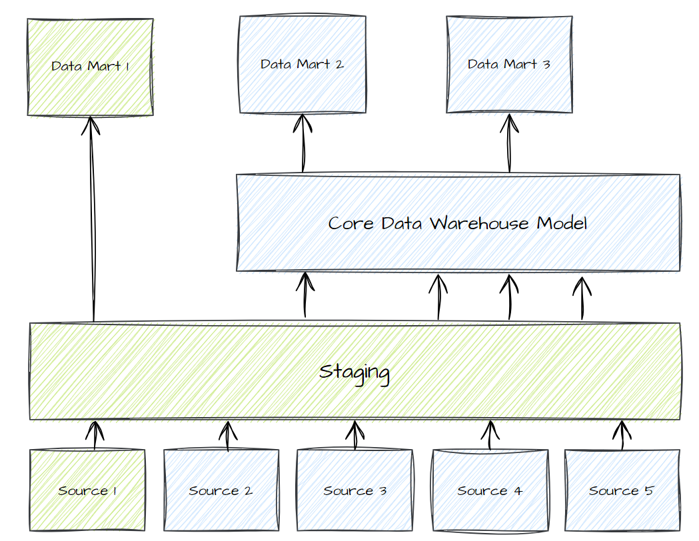
Materialisierungstypen von Objekten
- Views
- External Views
- Materialised view
- Tables
- CREATE OR REPLACE
- Incremental (Strategien: Merge, Delete und Insert, SCD2)
- Datenbankspezifisch wie z.B. Snowflake Transient und Timetravel
Materialisierungsformen und Szenarien
- Views ➡️ Bei kleinen Objekten mit geringer Komplexität mit wenigen Zugriffen am Tag
- Immer aktuell
- Langsam bei großen Datenmengen oder komplexen Logiken
- Tables
- Neue Einträge in den Quelldaten werden nicht automatisch hinzugefügt
- Rebuilds der Tabellen kann Zeit in Anspruch nehmen
- Benötigt Load-jobs
Datenqualität
Data Lineage
- Koordinierte Reihenfolge hilft Bottlenecks zu identifizieren
- Impact analysieren, bei Änderungen und Fehlern Abhängigkeiten zwischen Objekten in der Datenbank erkennen
- Identifikation von Materialisation Strategie von einzelnen Objekten
- Tools wie dbt zielen mehr auf einen modularen Ansatz aus der klassischen Objektorientierten Programmierung
- No Wall of Code oder Spaghetti code
Data Lineage - technical
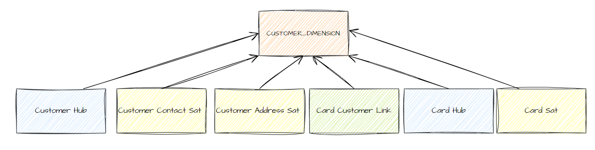
Data Lineage - business
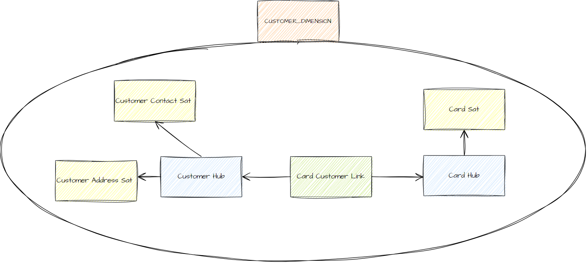
Umgang mit Datenqualitätsproblemen
- Testen der Daten bevor sie geladen werden
- fehlgeschlagene Tests ➡️ Daten werden nicht geladen
- fehlgeschlagene Tests ➡️ Daten werden trotzdem geladen (Fehlerschwere gering)
- fehlgeschlagene Tests ➡️ Daten werden teilweise geladen (Filterung)
- Nicht alle Datenqualitätsprobleme können vor dem Laden festgestellt werden
- Testen der Daten nachdem sie geladen werden
- fehlgeschlagene Tests ➡️ Tabellen werden zurückgesetzt
- Der aktuelle Load wird ignoriert und ein neuer Load angefordert
- Bis zur Klärung der Fehler muss bei einer SCD2 Logik die Ladestrecke deaktiviert werden, Gefahr falscher Historie
- fehlgeschlagene Tests ➡️ Daten werden erstmal übernommen und durch späteren Load bereinigt (Fehlerschwere gering)
- fehlgeschlagene Tests ➡️ Tabellen werden zurückgesetzt
Datenfehler Klassifikation
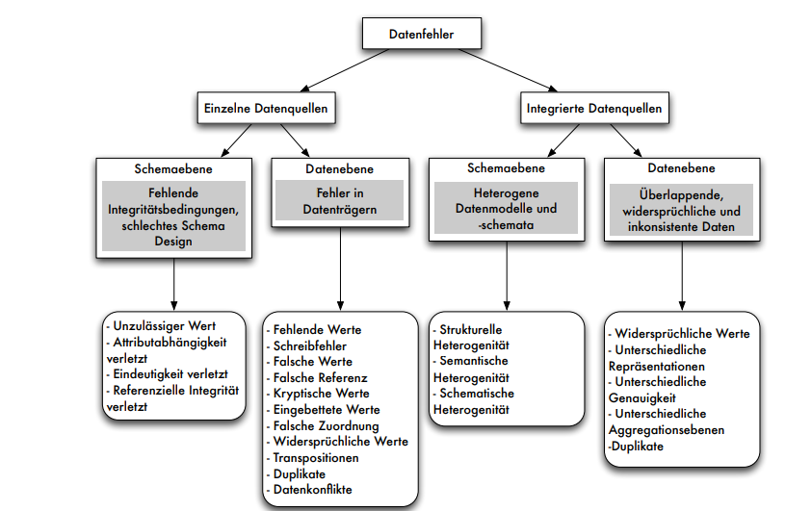
[Rahm Do 2000, Leser Naumann 2007]
Schematische Heterogenität
- Ursache: Entwurfsautonomie unterschiedliche Modellierung
- Unterschiedliche Normalisierung
- Was ist Relation, was Attribut, was Wert?
- Aufteilung von Daten in Tabellen
- Redundanzen aus Quellsystemen
- Schlüssel
- In SQL nicht gut unterstützt
- INSERT hat nur eine Zieltabelle
- SQL greift auf Daten zu, nicht auf Schemaelemente
- Erfordert meist Programmierung
Schematische Heterogenität - Mapping
- Datentransformationen zwischen zwei Systemen JSON - XML
- Entwickler Quellsysteme kennen nicht Zielbild des Data Marts
- Führt zu verschachtelten und komplexen Exporten
- Quell und Zielschema berücksichtigen
- Geschachtelt vs. flache Exporte
- Normalisiert vs. denormalisiert Exporte
Anforderungen an Datenqualität
- Konsistenz (Widerspruchsfreiheit)
- Korrektheit (Übereinstimmung mit Realität)
- Vollständigkeit (z.B. Abwesenheit von fehlenden Werten oder Attributen)
- Genauigkeit (z.B. Anzahl der Nachkommastellen)
- Granularität (z.B. tagesgenaue Daten)
- Zeitnähe (Wann wurde die letzte Änderung durchgeführt vs. Auftreten der Datenänderung)
- Relevanz (Wie wichtig sind die Daten?)
- Zuverlässigkeit (Nachvollziehbarkeit der Entstehung und Vertrauenswürdigkeit des Lieferanten)
- Verständlichkeit (inhaltlich und technisch / strukturell für jeweilige Zielgruppe)
- Verwendbarkeit (geeignetes Format, Zweckdienlichkeit)
- Einheitlichkeit (Datenformat)
- Eindeutigkeit (Interpretierbarkeit) und Schlüsselintegrität (Schlüssel und Referenzen)
Häufige Fehler
- Eindeutigkeit verletzt (Deduplizierung)
- Unterschiedliche Repräsentation (Business Logik)
- Widersprüchliche Werte (Business Logik)
- Referentielle Integrität verletzt (Business Logik)
- Unvollständig (not null)
- Duplicates (distinct, group by, ranking and filter)
- Default-Werte (replace)
- Unzulässige Ausprägungen (accepted values)
- Tippfehler (Business Logik)
- Falsche Datentypen (constraints)
- Relationship missing (foreign key checks)
Customer
| KNr | Name | Geb.datum | Alter | Geschl. | Telefon | PLZ | |
|---|---|---|---|---|---|---|---|
| 1 | Müller, Michael | 23.06.1985 | 47 | M | 64324 | 30419 | NULL |
| 1 | Thorsten Schmidt | 15.04.88 | 34 | W | 015143733689 | 33999 | NULL |
| 3 | Tom Behrens | 30.02.1999 | 24 | F | 015353212634 | 30457 | m.muster@m.de |
PLZ
| PLZ | Ort |
|---|---|
| 30419 | Stuttgart-Pfaffenwald |
| 30453 | Hannover-Lin-Mitte |
| 30457 | Hannover-Mühlenberg |
Customer
| KNr | Name | Geb.datum | Alter | Geschl. | Telefon | PLZ | |
|---|---|---|---|---|---|---|---|
| 1 | Müller, Michael | 23.06.1985 | 47 | M | 64324 | 30419 | NULL |
| 1 | Thorsten Schmidt | 15.04.88 | 34 | W | 015143733689 | 33999 | NULL |
| 3 | Tom Behrens | 30.02.1999 | 24 | F | 015353212634 | 30457 | m.muster@m.de |
PLZ
| PLZ | Ort |
|---|---|
| 30419 | Stuttgart-Pfaffenwald |
| 30453 | Hannover-Lin-Mitte |
| 30457 | Hannover-Mühlenberg |
Prozesszyklus Datenqualität
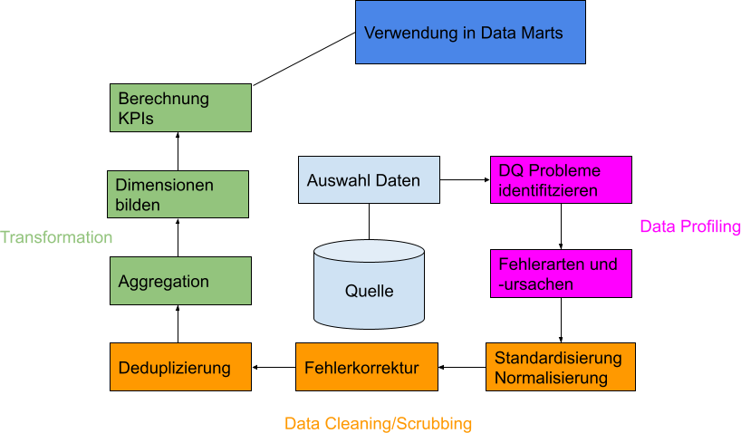
Formatierung der Daten
- Standardisierung Datentypen
- Datumsangaben
- Maßeinheiten
- Lesbarkeit - Kodierungen ersetzen
- Filtern und löschen unnötiger Bestandteile
Data Scrubbing and Cleaning
- Business Rules werden genutzt für eine Deduplizierung von Datensätzen
- Abweichungen bereinigen bei z.B. Transaktionen und Überweisungen (Retouren und Discounts)
- Fehlende Daten auffüllen ➡️ NULL Values ungern gesehen in Reports
Datengröße und Problematiken
- Längere Ladezeiten und im Ursprung Design ist das DWH für tägliche batch-loads entworfen
- Daten liegen über verschiedene Schichten oft Redundant vor
- Bei schnelleren Ladezyklen muss Reihenfolge eingehalten werden für Historisierung
- Viele kleine verschachtelte files in kurzen Intervallen können zu Deadlocks führen
Design-Entscheidung: Der Pfad über ein Data Warehouse muss nicht immer gewählt werden um Daten in Reports zu präsentieren (Big Data solution)
Skalierbarkeit - Improve Performance
- Query Optimisation
- Indexing
- Compression
- Aggregation - schon in den ersten Schichten
- Vertikales Partitioning
- Archive “old” data

Data Ownership
- Eigentümer und Verantwortlicher der Daten innerhalb der Organisation
- Entscheidung Wie, Wo und von Wem Daten genutzt werden dürfen
- Kann inhaltliche Fragen zu den Daten beantworten und kann den Bezug zur Realität darstellen
- Legt Anspruch an Datenqualität und fachlichen Tests fest
Monitoring und Test-Trigger
- Nicht nur technische Tests automatisieren auch immer fachliche Tests automatisiert testen
- Freud Detection
- Anomalien
- Arten von Triggern
- Strategien Log-basiert
- Zeitstempel und Zeitvergleich
- Snapshots und vergleich mit vorherigen Stand
- Tests ausführen basierend auf Änderungen an der Quelle
- Push vs Pull
- Regelmäßige Zeitintervalle
- Nachts, am Wochenende, alle 4 oder 12 Stunden
Literatur
- Felix Leser; Ulf Naumann, Informationsintegration — Architekturen und Methoden zur Integration verteilter und heterogener Datenquellen, dpunkt, Heidelberg 2007
- Jack E. Olson, Data Quality: The Accuracy Dimension, Morgan Kaufmann, 2003
- Doug Vucevic,Testing the Data Warehouse Practicum: Assuring Data Content, Data Structures and Quality, Trafford, 2012
- Michael Hahne, Modellierung von Business-Intelligence-Systemen: Leitfaden für erfolgreiche Projekte auf Basis flexibler Data-Warehouse-Architekturen (Edition TDWI), dpunkt.verlag, 2014